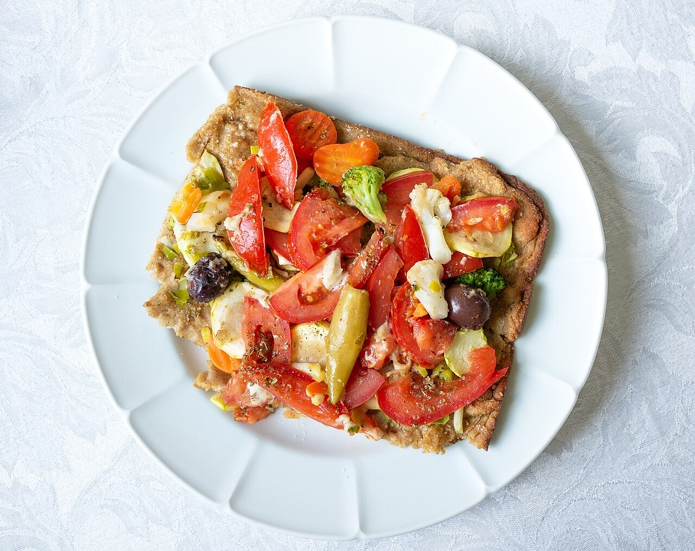
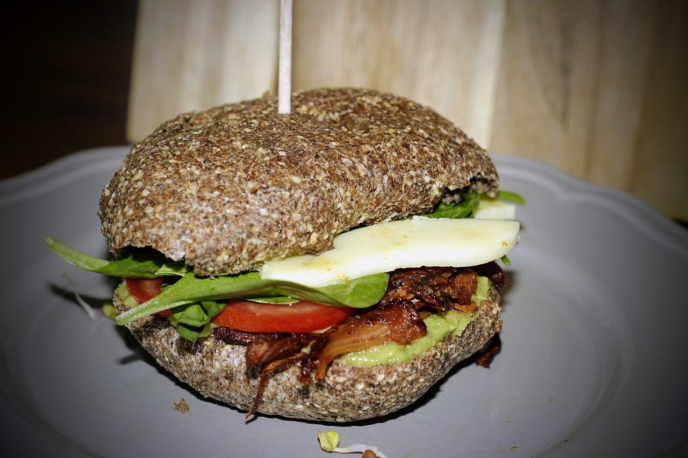

Fotografias ilustrativas — no site final usamos as vossas.
Pizzaria / hamburgueria · Vila das Aves (Santo Tirso)
Pizza, burger e café, com gula
Uma das pizzas da casa, para partilhar.
Também há hambúrguer vegetariano.
Por QR code, sem esperar pela equipa.
O Gulas é uma pizzaria, hamburgueria e café no Largo Francisco Machado Guimarães, em Vila das Aves. Venha provar a Pizza Gulas ou um hambúrguer de mostarda.


Fotografias ilustrativas — no site final usamos as vossas.
Novo · Pedidos por QR code
Menos espera nas horas de ponta, menos enganos nos pedidos e a equipa livre para servir.
Pedido de reserva
Escolha o dia e a hora — o pedido chega por WhatsApp e confirmamos logo.
↑ Assim chegaria a mensagem ao vosso WhatsApp. (Nesta demonstração nada é enviado.)
Onde estamos
Proposta para Gulas - Pizza, Burger & Coffee
Esta página foi feita de propósito para Gulas - Pizza, Burger & Coffee por João Machado, programador web aqui de Guimarães. Inclui:
Eu trato do alojamento e da manutenção. Sem compromisso.